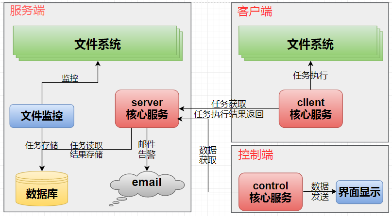

在没有使用filesync实时同步系统的情况下,用户利用人工手动上传或者使用脚本的方式定时把文件同步到目标服务器上。在使用filesync实时同步系统的情况下,文件同步的工作由filesync来完成。
filesync实时同步系统工作原理如下图(图示1-1)所示,通过各部件之间的协同工作,实现了文件实时同步的功能。

图示 1-1 filesync工作原理示意图
Copyright © 2018-2019 WuNanhui. All rights reserved.